Any file
SLYS works at byte level, so it handles virtually any type of file.

Split any file into encrypted pieces. Only your password and your seed bring it back together.
Built with Rust and Flutter. Everything runs on your computer.
SLYS works at byte level, so it handles virtually any type of file.
After fragmenting you get a seed: encrypted text with a checksum that records the file name, fragment count, mode and fragment names.
Only the right password and seed restore the file. Without both, the fragments stay unreadable.
None · obfuscation only. No fragment is encrypted: they are raw slices with random names. The seed still is encrypted.
Mid · not recommended. Only the first and last fragment are encrypted; most of the file stays readable.
High · recommended, and the default. Every fragment is encrypted and authenticated.
If the content of the file itself must stay confidential, choose High. In Mid and None, part or all of the file is stored unencrypted.
Fragment a file in four steps, rebuild it in four.
slys_fragments on your Desktop.SLYS deletes the original after fragmenting and the pieces after rebuilding, but only once the result has been verified byte for byte. The deletion overwrites the data on a best-effort basis: on SSDs and some file systems traces may remain, so full-disk encryption is the real protection. Keep a backup until you have rebuilt the file once and checked it.
To recover a file you need all three: the seed, the password and the fragments.
SLYS Desktop 1.6 (dark theme, purple accent). Click an image to enlarge it.
Videos of SLYS 1.5.2 (the interface has changed since). They load from YouTube only when you press play.
Does not play here? Open it on YouTube (opens in a new tab).
Does not play here? Open it on YouTube (opens in a new tab).
Current version: 1.6.1, free and open source (GPL-3.0). Compare the SHA-256 checksum of each file before running it.

Recommended for your system
Download 1.6.1 (opens in a new tab)
SHA-256 see SHA256SUMS in the release
Recommended for your system
Download 1.6.1 (opens in a new tab)
Flatpak SHA-256 see SHA256SUMS in the release
ZIP SHA-256 see SHA256SUMS in the release

Planned
Every release has a SHA256SUMS file and a build attestation that proves who built each file and from which commit. If anything does not match, do not run the file.
Windows (PowerShell)
Get-FileHash .\Slys_Installer.exe -Algorithm SHA256Linux
sha256sum -c SHA256SUMSBuild attestation (needs the GitHub CLI)
gh attestation verify Slys.flatpak --repo gugeldot/slysFlatpak (recommended): flatpak install --user Slys.flatpak, then run SLYS from your applications menu or with flatpak run io.github.gugeldot.Slys. It has no network access and cannot see folders like ~/.ssh.
ZIP: extract it anywhere and run slys. If your system does not run it, mark it as executable with chmod +x slys.
Windows may show a SmartScreen warning the first time you run the installer. The executable is not signed with a code-signing certificate yet (signing is planned). SmartScreen flags unsigned files by default. To continue, choose More info, then Run anyway. Verifying the SHA-256 checksum above first is recommended.
Smart App Control. On some Windows 11 installations, Smart App Control blocks the installer with no Run anyway option, because the file is not signed yet. The only ways around it are to turn Smart App Control off (Windows Security, App & browser control, Smart App Control settings; on many versions it cannot be turned back on without resetting Windows) or to wait for the signed build. Choose what suits that computer.
Stable basic version for Windows and Linux.
"Settings" tab for personalized persistence: output and input paths, and color themes.
I'm a software engineer who creates tools for deficiencies or gaps I see in my daily life, with a focus on offensive security. SLYS started as one of those gaps. Here is where to find the rest of what I do.
Also on LinkedIn (opens in a new tab), Hack The Box (opens in a new tab) and TryHackMe (opens in a new tab).
SLYS is a tool for fragmenting and reconstructing sensitive information using a password and a seed. It is the sole responsibility of the user to store and manage the password and the seed securely.
Loss, accidental deletion or mishandling of the password or the seed may result in permanent loss of access to the fragmented data.
Neither the development team nor the application shall be held liable for any damages, data loss or consequences arising from the mismanagement, loss or deletion of the password or the seed by the user. By using SLYS, you accept full responsibility for keeping them safe and confidential.